Zabbix¶
Zabbix. Paigaldamine ja seadistamine¶
- Zabbixi ajalugu ja arhitektuur
- Andmete kogumine
- Paigaldamine
- Seadistamine
Ajalugu¶
- Zabbix on avatud lähtekoodiga jälgimis- ja olekute jälgimissüsteem, mille kirjutas Aleksei Vladõšev
- Zabbix sai alguse 1998. aastal Läti pangas siseprojektina
-
- aprillil 2001 avaldati süsteem GPL litsentsi all
- Esimene stabiilne versioon — 1.0 ilmus 23. märtsil 2004
- Aprillis 2005 loodi Läti ettevõte SIA Zabbix projekti haldamiseks

Arhitektuur¶

Andmete kogumine¶


Rohkem leiad: Zabbix integration with Big Data systems in large-scale environment
Andmete kogumise meetodid¶
- Pull
- Teenuste kontrollid
- Passiivne agent
- SSH/Telnet
- Push
- Aktiivne agent
- Zabbix Trapper ja SNMP Traps
- Logifailide jälgimine
Aktiivne/passiivne agent¶

Nõuded¶
Riistvara konfiguratsioonide näited¶
| Nimi | Platvorm | CPU/Mälu | Andmebaas | Jälgitavate seadmete arv |
|---|---|---|---|---|
| Väike | Ubuntu Linux | PII 350MHz 256MB | MySQL MyISAM | 20 |
| Keskmine | Ubuntu Linux 64 bit | AMD Athlon 3200+ 2GB | MySQL InnoDB | 500 |
| Suur | Ubuntu Linux 64 bit | Intel Dual Core 6400 4GB | RAID10 MySQL InnoDB või PostgreSQL | >1000 |
| Väga suur | RedHat Enterprise | Intel Xeon 2xCPU 8GB | Fast RAID10 MySQL InnoDB, PostgreSQL või Oracle | >10000 |
Zabbixi paigaldamine (1)¶
# Paigaldame Zabbixi hoidla
$ rpm -Uvh https://repo.zabbix.com/zabbix/6.4/rhel/8/x86_64/zabbix-release-6.4-1.el8.noarch.rpm
$ dnf clean all
# Paigaldame zabbix-serveri, zabbix-agendi, zabbix-frontend
$ dnf module switch-to php:7.4
$ dnf install zabbix-server-mysql zabbix-web-mysql zabbix-apache-conf zabbix-sql-scripts
zabbix-selinux-policy zabbix-agent
# Paigaldame MySQL
$ dnf install mysql-server
$ systemctl start mysqld.service
CentOS 8
Zabbixi paigaldamine (2)¶
# Andmebaasi initsialiseerimine
$ mysql -uroot
mysql> create database zabbix character set utf8 collate utf8_bin;
mysql> create user zabbix@localhost identified by 'password';
mysql> grant all privileges on zabbix.* to zabbix@localhost;
mysql> set global log_bin_trust_function_creators = 1;
mysql> quit;
# Zabbixi andmeskeemi import ja log_bin_trust_function_creators väljalülitamine
$ zcat /usr/share/zabbix-sql-scripts/mysql/server.sql.gz | mysql --default-character-set=utf8mb4 -uzabbix -p zabbix
$ mysql -uroot
mysql> set global log_bin_trust_function_creators = 0;
mysql> quit;
# Zabbixi serveri andmebaasi parooli seadistamine
$ vim /etc/zabbix/zabbix_server.conf
DBPassword=password
# Teenuse käivitamine
$ systemctl restart zabbix-server zabbix-agent httpd php-fpm
$ systemctl enable zabbix-server zabbix-agent httpd php-fpm
CentOS 8
Zabbixi paigaldamine (1)¶
# Paigaldame Zabbixi hoidla
$ wget https://repo.zabbix.com/zabbix/6.4/ubuntu/pool/main/z/zabbix-release/zabbix-release_6.4-1+ubuntu22.04_all.deb
$ dpkg -i zabbix-release_6.4-1+ubuntu22.04_all.deb
$ apt update
# Paigaldame zabbix-serveri, zabbix-agendi, zabbix-frontend
$ apt install zabbix-server-mysql zabbix-frontend-php zabbix-apache-conf zabbix-sql-scripts zabbix-agent
# Paigaldame MySQL
$ apt install mysql-server
$ systemctl start mysql.service
Ubuntu 22
Zabbixi paigaldamine (2)¶
# Andmebaasi initsialiseerimine
$ mysql -uroot
mysql> create database zabbix character set utf8 collate utf8_bin;
mysql> create user zabbix@localhost identified by 'password';
mysql> grant all privileges on zabbix.* to zabbix@localhost;
mysql> set global log_bin_trust_function_creators = 1;
mysql> quit;
# Zabbixi andmeskeemi import ja log_bin_trust_function_creators väljalülitamine
$ zcat /usr/share/zabbix-sql-scripts/mysql/server.sql.gz | mysql --default-character-set=utf8mb4 -uzabbix -p zabbix
$ mysql -uroot
mysql> set global log_bin_trust_function_creators = 0;
mysql> quit;
# Zabbixi serveri andmebaasi parooli seadistamine
$ vim /etc/zabbix/zabbix_server.conf
DBPassword=password
# Teenuse käivitamine
$ systemctl restart zabbix-server zabbix-agent apache2
$ systemctl enable zabbix-server zabbix-agent apache2
Ubuntu 22
Esmane seadistamine (1)¶
http://Server-IP/zabbix

Esmane seadistamine (2)¶
http://Server-IP/zabbix

Esmane seadistamine (3)¶
http://Server-IP/zabbix

Esmane seadistamine (4)¶
http://Server-IP/zabbix
 ¶
¶
Esmane seadistamine (5)¶
http://Server-IP/zabbix

Esmane seadistamine (6)¶
http://Server-IP/zabbix
![PILT: Edukas paigaldamine] (https://bestmonitoringtools.com/wp-content/uploads/Zabbix_frontend_install_step_6.png)
Kontroll¶
http://Server-IP/zabbix (Admin/zabbix)
 ¶
¶
Seire seadistamine¶
 ¶
¶
Zabbix-agendi paigaldamine¶
# Paigaldame Zabbixi hoidla ja seadistame zabbix-agent
$ rpm -Uvh https://repo.zabbix.com/zabbix/5.0/rhel/7/x86_64/zabbix-release-5.0-1.el7.noarch.rpm
$ yum install zabbix-agent
# Määrame serveri
$ vim /etc/zabbix/zabbix_agentd.conf
ServerActive=10.0.0.30
# Käivitame teenuse
$ systemctl enable zabbix-agent
$ systemctl start zabbix-agent
Näide CentOS 7 puhul
Zabbixi põhimõistete ülevaade¶
- Host / Seade – Mõõdikute allikas. Loogiline mõiste. 1 füüsiline seade võib olla esindatud mitme jälgitava seadmena
- Item / Andmeelement – Mõõdik või mistahes andmed. See, mida server saab seadmelt
- Trigger / Päästik – Kirjeldab, milliseid andmeelemendi väärtusi loeme rikkeks
- Action / Tegevus – Viis sündmustele reageerimiseks. Näiteks teavituse saatmine päästiku käivitumisel
Automaatse avastamise ja tegevuste seadistamine (1)¶
Avastamisreeglite seadistamine
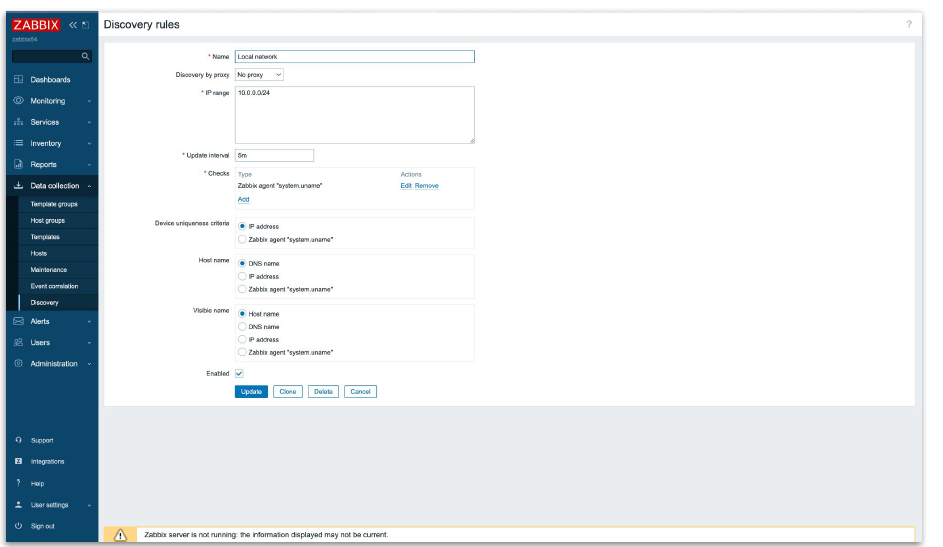
¶Automaatse avastamise ja tegevuste seadistamine (2)¶
Tegevuste seadistamine
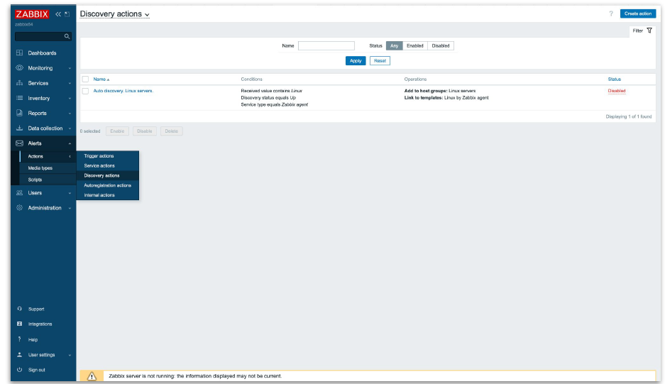
¶Automaatse avastamise ja tegevuste seadistamine (3)¶
Tegevuste seadistamine
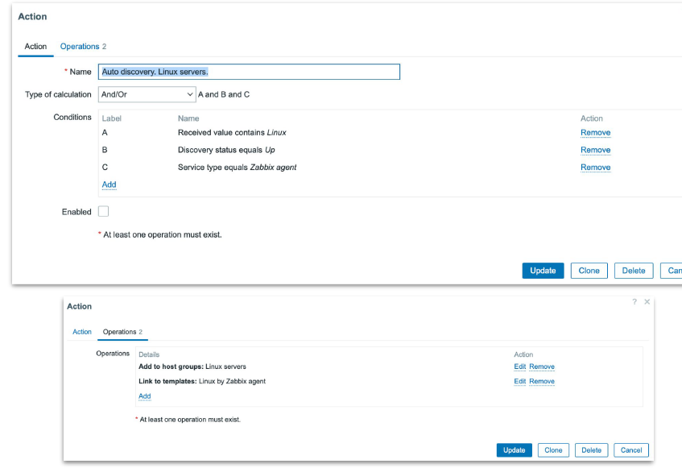
Seadme konfigureerimine¶
Seadmete seadistamine
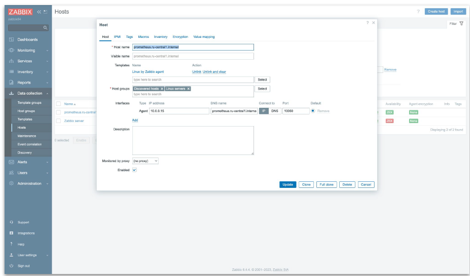
Andmeelemendi lisamine¶
Andmeelementide seadistamine
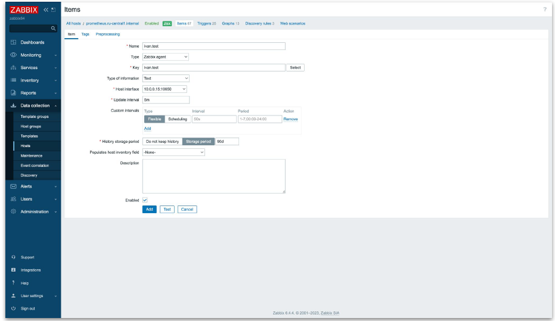
Trigger konfigureerimine¶
Triggeri seadistamine
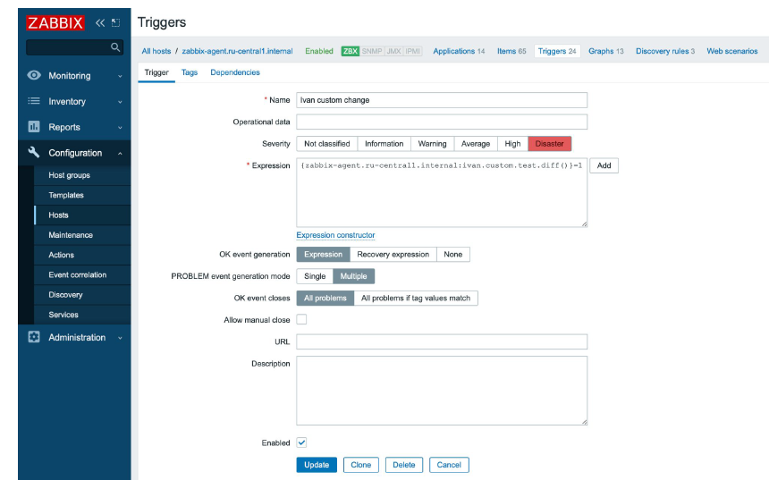
Teavituste seadistamine¶
- Kontrollige globaalseid meediumitüüpide seadistusi
- Administration -> Media types (versioonis 6.4 — Alerts -> Media types)
- Määrake kõik vajalik: SMTP e-posti jaoks, Telegrami tokenid, SMS-lüüs
- Seadistage kasutajate teavitusmeetodid
- Administration -> User -> Media (versioonis 6.4 — Users -> User -> Media)
- Määrake e-posti aadress, Telegrami kasutajanimi, SMS-i telefoninumber
- Seadistage tegevus päästiku jaoks
- Administration -> Actions -> Trigger actions (versioonis 6.4 — Alerts -> Actions -> Trigger actions)
- Vahekaart Action: saate määrata sõnumi saatmise tingimused
- Vahekaart Operations: määrake kellele ja kuhu sõnumid saata, eskalatsiooni sammud
Graafikud ja komplekssed ekraanid¶
Teemad¶
- Graafikud
- Võrgukaardid
- Paneelid
- Refleksioon
Graafikud¶

Lihtsad graafikud
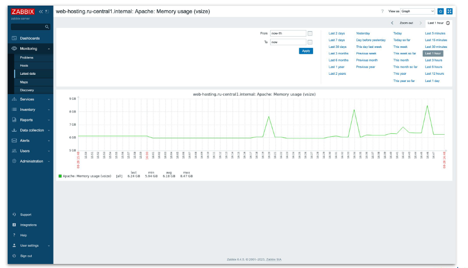
Teenivad andmeelemendiga kogutud andmete visualiseerimiseksKasutaja graafikud
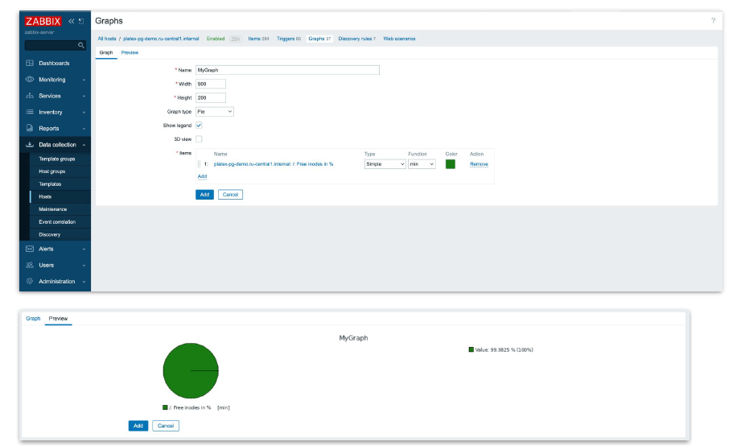
Pakuvad individuaalse seadistamise võimalustSituatsioonilised graafikud
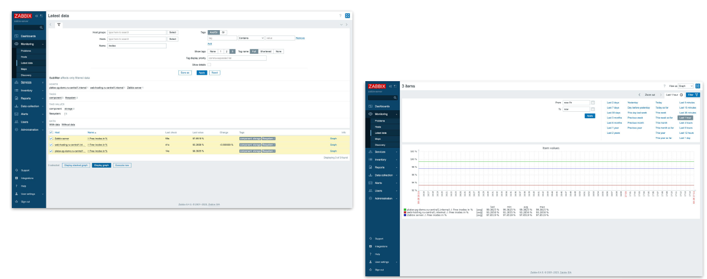
Graafikud mitme andmeelemendi võrdlemiseks "lennult"Võrgukaardid¶
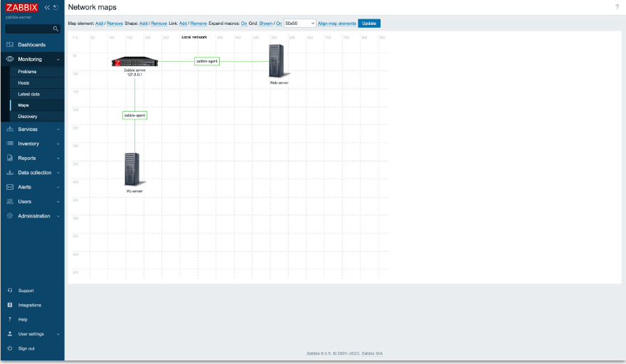
Infrastruktuuri visualiseeriminePaneelid¶
 Visualiseerimisplatvorm erinevate tööriistadega (graafikud/kaardid/jne)
Visualiseerimisplatvorm erinevate tööriistadega (graafikud/kaardid/jne)
Häirete seadistamine¶
Teemad¶
- Teavituste saatmise põhimõtted
- Teavituste edastamise kanalid
- Häirete seadistamine Zabbix'is
- Refleksioon
Põhilised lähenemisviisid teavituste saatmiseks¶
Parameetrite valik¶
- Tuleb valida parameetrid, mille alusel saadetakse teavitusi
- KÕIGI parameetrite valimine on halb praktika
- Parameetrite valik sõltub peamiselt teenusest ja ärinõuetest

Käivitamislävi¶
- Määrake käivitamislävi pärast meetrika jälgimist
- Arvestage meetrika tippväärtusi ja nende kestust
- Sageli on vaja rohkem kui ühte käivitusläve
- Võimalik on seadistada mitu teavitustasandit sama meetrika jaoks

Kas teavitused sisse lülitada või mitte?¶
- Teavituste arvu tuleb vähendada
- Kui teavitusele ei reageerita, on parem see välja lülitada, et vältida edaspidi liigset teavitamist
- Kui mõne parameetri osas on kahtlusi, on parem teavitused sisse lülitada, vähemalt alguses
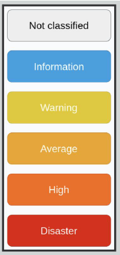
Olulisuse tase¶
Olulisuse tase määrab probleemi prioriteedi: - Parameetrid jaotatakse tavaliselt kahte põhirühma: - Kõrge prioriteet — kriitilised probleemid - Madal prioriteet — probleemid, millele tuleks tähelepanu pöörata - Värvikodeering sündmuste visuaalseks kuvamiseks - Erinevate teavituskanalite seadistamine erinevate olulisustasemete jaoks - Võimalik seadistada kohandatud olulisuse tasemeid
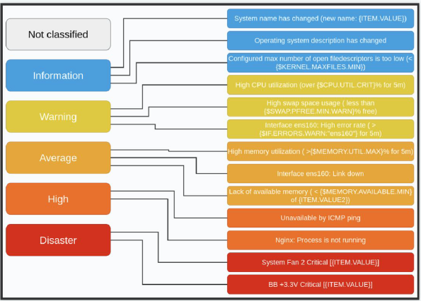
Eskalatsioon¶
Eskalatsioon on protseduur, mis juhib tähelepanu konkreetsele probleemile, kui praegune lahenduskäik ei ole rahuldav: - Probleemi ja eskalatsiooni põhjuse selge sõnastamine - Probleemi prioriteedi muutmise põhjus - Tüüpprobleemide eskaleerimistasemete eelnev planeerimine - Eskalatsiooniprotsesside seadistamine vastavalt probleemi tasemele
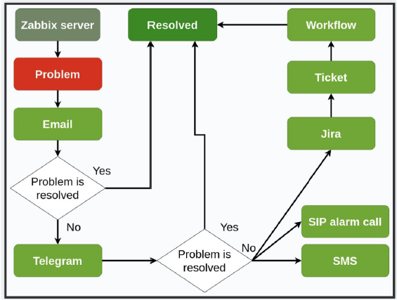
Eeskirjad ja juhendid¶
- Kõigi võimalike stsenaariumide jaoks eeskirjade ja juhendite koostamine
- Vajaliku teabe edastamine teavituste adressaatidele
- Eeskirjade ja juhendite pidev täiustamine
- Teavituste seadistamine on lõputu protsess! Seda tuleb meeles pidada
Häirete testimine¶
- Vajadus jälgida ja kontrollida teavitussüsteemi ennast
- Tööriistad teavitussüsteemi kontrollimiseks (skriptid, testparameetrid ja päästikud)
Häirete deduplikatsioon¶
- Vältige teavitusi üksikutele töötajatele
- Kasutage rühmateavitusi
- Kasutage päästikute sõltuvusi
Häirete ajakava¶
- Erinevate teavituskanalite jaotamine päeva ja nädalapäevade kaupa
- Perioodilisi teavitusi samal ajal saab välistada
Teavituskanalid¶
E-post¶
- Saatmine SMTP kaudu (oma või muu server)
- Teavitused meililistidele ja konkreetsetele kasutajatele
- Kirja malli kohandamine
- Lisateave kirjas
- Mittepealetükkivus
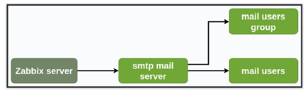
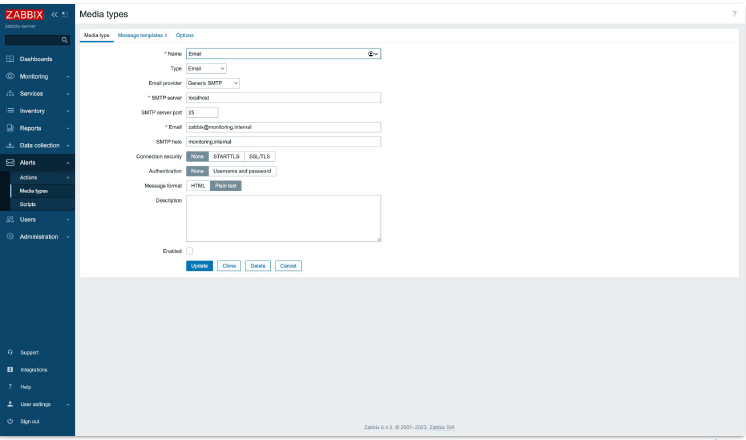
Telegram¶
https://git.zabbix.com/projects/ZBX/repos/zabbix/browse/templates/media/telegram
- Saatmine veebihaagi kaudu
- Teavituste kiirus
- Adressaatide mugav haldamine (teavitused kanalisse või privaatsõnumisse)
- Lihtsustatud seadistamine (alates Zabbix'i 5. versioonist)
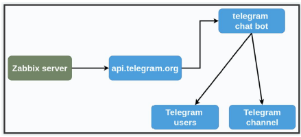
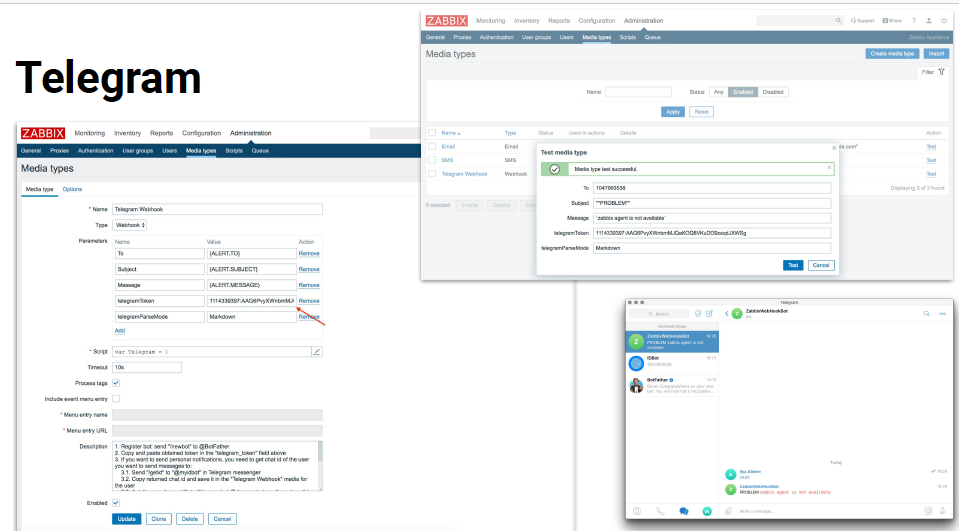
Teised sõnumirakendused¶
https://git.zabbix.com/projects/ZBX/repos/zabbix/browse/templates/media
- Teavitusmeetodi universaalsus (veebihaak)
- Erinevused sõnumimallide vormingus
- Lisavõimalused (graafikutega pildid, emotikonid, värviline esiletõstmine)
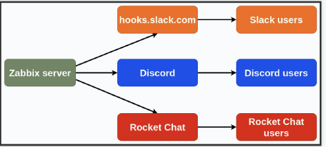
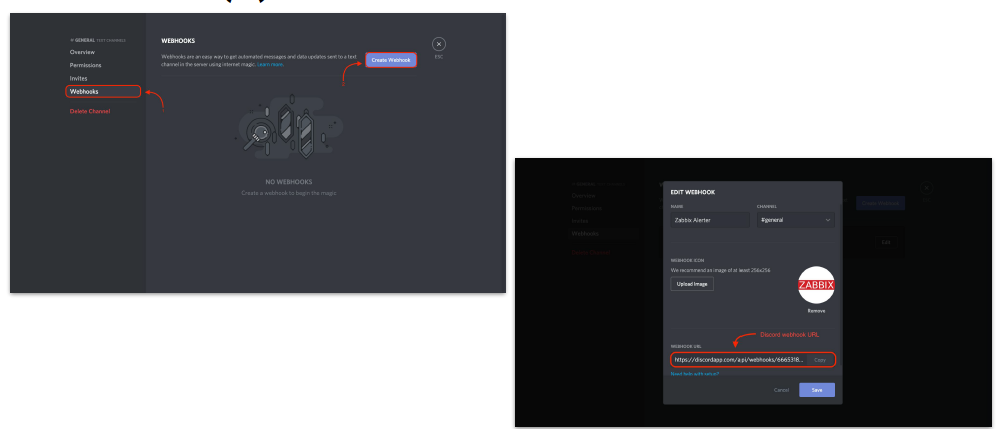
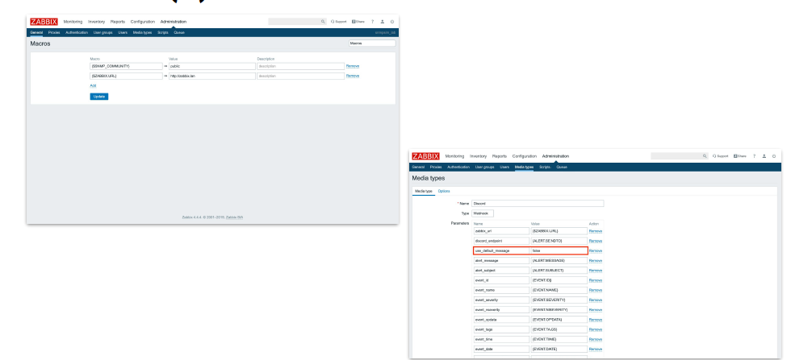
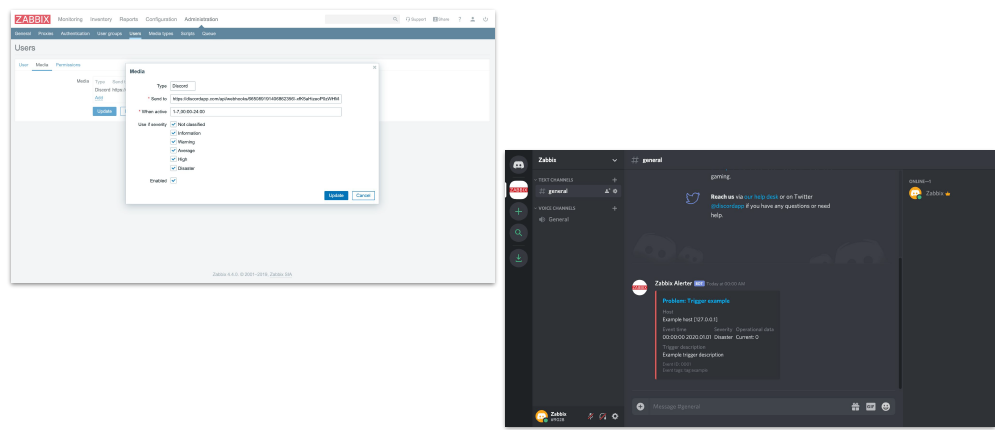
SMS (saatmine läbi lüüsi)¶
- Teavituste kiirus
- Teavituste universaalsus (sõltumata telefonimudelist)
- Suhteline usaldusväärsus
- Piirangud sõnumite sisule
- Nõuab tasuliste teenuste kasutamist
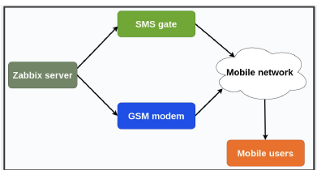
SMS (saatmine läbi GSM-modemi)¶
- Tõrkekindel skeem tõsise avarii korral
- Nõuab modemi töö ja ühenduse kontrollimist
- Skeem ei sõltu objekti sidekanalitest
- Vajab samuti varundamist
- Nõuab tasuliste teenuste kasutamist
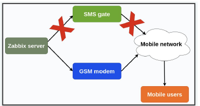
Push-teavitused¶
- Kaasaegne ja võib olla mugav
- Nõuab tasuliste teenuste kasutamist
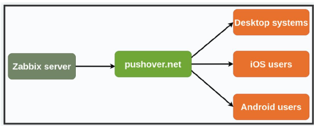
Piletid teenindustoes¶
- Mugav ja operatiivne
- Probleemi tuvastamise ja lahendamise protsessi kontroll
- Täiendav eskalatsioon ja teave probleemi kohta
- Võimalik tõhusalt delegeerida ja jagada probleemi töögrupi ülesanneteks
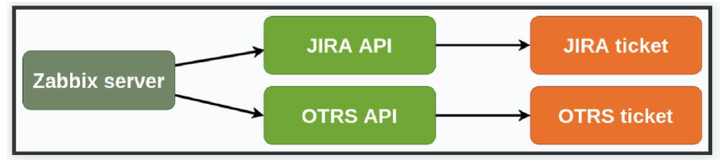
Kõne sõnumiga¶
- Tõhus teavitamine — äratab keda iganes! (kuigi see pole kindel...)
- Nõuab väga täpset eskalatsiooni seadistust, muidu riskitakse kiire ja püsiva väljalülitamisega
- Nõuab kolmanda osapoole sidevahendeid (kui ettevõttel pole oma analoogseid)
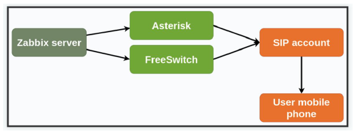
Häirete seadistamine Zabbix'is¶
Teavituste loogika¶
Zabbix'is toimub teavituste seadistamine järgmise loogika alusel: 1. Server jälgib elementi (Item) 2. Päästik (Trigger) aktiveerub, kui element vastab teatud tingimustele 3. Probleem (Problem) luuakse, kui päästik on aktiveeritud 4. Tegevus (Action) käivitatakse, mis saadab teavituse 5. Tegevus dokumenteeritakse tegevuste logis (Action log)
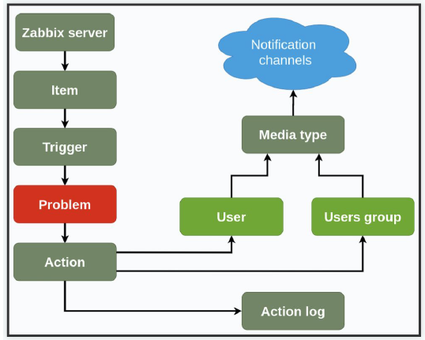
Lahendatud probleemi käsitlemine¶
Sarnane loogika kehtib ka lahendatud probleemide puhul, kus teavitatakse kasutajaid, kui probleem on lahendatud.
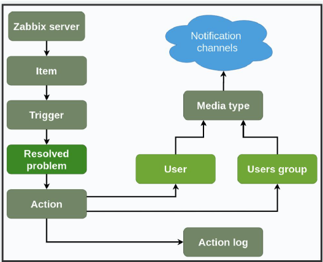
Teavituste silumine¶
- Kontrollige Media type tööd Test nupuga
- Kontrollige Action seadistusi
- Kontrollige sündmusi Action log'is
- Kontrollige, kas vajalik Media type on vajalikul kasutajal
Portaalide ja andmebaaside monitoorimine¶

Teemad¶
- Veebiserverite monitoorimine
- Andmebaaside monitoorimine (lähenemisviisid)
- MySQL monitoorimine
- PostgreSQL monitoorimine
Veebiserverite monitoorimine¶
Veebportaali monitoorimise mõõdikud (1)¶
- Serveri põhisüsteemid
- CPU
- RAM
- Kõvaketas
- Võrk
- Turvalisus
- Kuidas monitoorime?
- zabbix-agent serveril + Zabbix standardmallid
- Prometheus Node exporter + Zabbix standardmallid
Learn more about Browser Monitoring

Read our Introduction to Browser Monitoring
You can use any of these examples in your REA
Veebportaali monitoorimise mõõdikud (2)¶
- Veebiserver
- Veebiteenuse staatus
- Portide kättesaadavus
- Päringud sekundis (RPS)
- HTTP-lõpetamiskoodid
- Veebserveri vead
- SSL sertifikaadid
- Reageerimisaeg
- Kuidas monitoorime?
- zabbix-agent serveril + Zabbix standardmallid
- Simple check Zabbix serverilt
- Veebistsenaariumid monitooritud serveritelt
- Kohandatud kasutajaparameetrid (UserParameter)
- Logisõnumid
Veebportaali monitoorimise mõõdikud (3)¶
- Rakendusserver
- Veebserveri teenuse olek
- Teenuste olekud
- Päringud sekundis (php, redis, rabbitMQ, muud)
- Puhvri kasutamine
- Järjekorra kasutamine
- Protsesside arv ja olek
- Teenuste vead logides
- Kuidas monitoorime?
- zabbix-agent serveril + Zabbix standardmallid
- Simple check Zabbix serverilt
- Kohandatud kasutajaparameetrid (UserParameter)
- Logisõnumid
Veebportaali monitoorimise mõõdikud (4)¶
- Ärimõõdikud
- külastused
- konversioon
- müügid
- rakenduse allalaadimised
- Kuidas monitoorime?
- Kohandatud kasutajaparameetrid
- Arvutatud andmeelemendid
Näide: Apache monitoorimine (1)¶
# status_module mooduli ühendamine
$ apachectl -M | grep status_module
status_module (shared)
# Kui moodul pole ühendatud - tuleb leida ja redigeerida status.conf
# (status.conf sisu - järgmisel slaidil)
$ ls /etc/apache2/mods-available | grep status.conf
status.conf
# Konfiguratsiooni kontrollimine ja mooduli sisselülitamine
$ apachectl -t
$ a2enmod status
$ systemctl restart apache2
$ systemctl status apache2
Ubuntu (eeldades, et Zabbix-agent on juba paigaldatud ja käivitatud)
Näide: Apache monitoorimine (2)¶
# status.conf
<IfModule mod_status.c>
# Allow server status reports generated by mod_status,
# with the URL of http://servername/server-status
# Uncomment and change the "192.0.2.0/24" to allow access from other hosts.
<Location /server-status>
SetHandler server-status
Require local
Require ip 127.0.0.1/32
</Location>
# Keep track of extended status information for each request
ExtendedStatus On
# Determine if mod_status displays the first 63 characters of a request or
# the last 63, assuming the request itself is greater than 63 chars.
# Default: Off
#SeeRequestTail On
<IfModule mod_proxy.c>
# Show Proxy LoadBalancer status in mod_status
ProxyStatus On
</IfModule>
</IfModule>
status.conf
Näide: Apache monitoorimine (3)¶
# Mooduli testimine
$ curl http://127.0.0.1/server-status?auto
localhost
ServerVersion: Apache/2.4.29 (Ubuntu) OpenSSL/1.1.1
ServerMPM: prefork
Server Built: 2022-03-16T16:53:42
CurrentTime: Thursday, 10-Aug-2023 22:45:35 UTC
RestartTime: Thursday, 10-Aug-2023 22:45:33 UTC
ParentServerConfigGeneration: 1
ParentServerMPMGeneration: 0
ServerUptimeSeconds: 2
ServerUptime: 2 seconds
Load1: 0.00
Load5: 0.00
Load15: 0.00
...
Konsoolist kontroll
Zabbix-agendi seadistamine¶

PILT: Zabbix-agendi seadistamine
Näide: töölaud (dashboard)¶

PILT: Zabbix töölaua näide Apache ja MySQL monitoorimise graafikutega
Andmebaaside monitoorimine¶

Article: Out-of-the-box database monitoring
ODBC (Open Database Connectivity) monitoorimine. Zabbix sisseehitatud moodul¶
- Eelised
- Zabbixisse sisse ehitatud
- Toetab paljusid andmebaase (Oracle, MySQL, PostgreSQL, MSSQL, IBM DB2, MongoDB, Firebird jne)
- Ametlikud mallid populaarsetele andmebaasidele (MySQL, MSSQL, Oracle) (alates veebruar 2020)
- Puudused
- Töötab ainult serveril, kus on käivitatud zabbix-server ja zabbix-proxy, seetõttu on monitoorimiseks vajalik otsene ühendus andmebaasiga; NAT-i taga asuvate andmebaaside monitoorimine pole võimalik
- Puudub ühenduste kogu (pool) tugi. Iga päring on uus ühendus andmebaasiga (versioonis 4.4 ilmus db.odbc.get, mistõttu on võimalik vähendada päringute arvu ja andmeid eeltöödelda)
- Platvormist sõltuv lahendus (lahendust ei saa kasutada seal, kus pole Linux-servereid)
Zabbix agent UserParameter abil¶
- Eelised
- Töötab vahetult andmebaasi serveril (agendi aktiivne või passiivne režiim, aktiivse puhul NAT pole probleem)
- Kiiresti ja suhteliselt lihtsalt saab luua oma lahenduse
- Ristplatvormilisus tänu skriptidele erinevates keeltes
- Puudused
- Puudub ühenduste kogu tugi. Iga skripti käivitamine on uus ühendus andmebaasiga
- Paljude kogutavate mõõdikute ja kõrge küsitlemissageduse korral suureneb serveri koormus (CPU, RAM)
- Puudub ühtne lahendus Windows/Linux/AIX ja erinevate andmebaaside jaoks
- Lahenduse kasutamine võib olla võimatu infrastruktuuri piirangute või turvalisuspoliitika tõttu (näiteks väliste skriptide suhtes)
- Vajalik täiendava tarkvara paigaldamine (näiteks Python)

PILT: UserParameter eeliste ja puuduste loetelu
Zabbix Agent User Parameters
Moodulid Zabbix Agendi jaoks (libzbxpgsql, libzbxredis, zabbix-modulemysql jne)¶
- Eelised
- Töötavad vahetult andmebaasi serveril (agendi aktiivne või passiivne režiim, aktiivse puhul NAT pole probleem)
- Puudused
- Töötavad ainult Linuxil
- Iga moodul on mõeldud konkreetsele andmebaasile (pole ühtset moodulit kõigile populaarsetele andmebaasidele)
- Paljude moodulite tugi on lõpetatud, moodulid ja mallid ei arene
- Puudub ühenduste kogu tugi. Iga päring on uus ühendus andmebaasiga
- Paljusid mooduleid tuleb ise lähtekoodi põhjal kompileerida, selleks on vaja kvalifitseeritud inseneri
Välised agendid (mamonsu, DBforBIX, ZabbixDBA, zbxdb, zbxora jne)¶
- Eelised
- Töötavad vahetult andmebaasi serveril (agendi aktiivne või passiivne režiim, aktiivse puhul NAT pole probleem)
- Paljud agendid on ristplatvormilised, kuid mitte kõik pole testitud Windows/AIX-il
- Paljud agendid toetavad ühenduste kogu
- Puudused
- Mõned agendid on ammu hüljatud ja ei arene, puuduvad valmis mallid erinevate andmebaaside jaoks (DBforBIX, ZabbixDBA)
- Mõnede agentide keerulised seadistused (DBforBIX, zbxdb)
- Lahenduse kasutamine võib olla võimatu infrastruktuuri piirangute või turvalisuspoliitika tõttu (näiteks on nõutav PSK/SSL-krüpteerimine monitoorimisandmete edastamisel)
- Vajalik täiendava tarkvara paigaldamine (näiteks Python, Java või Perl)
Zabbix Agent 2¶
- Eelised
- Töötavad vahetult andmebaasi serveril (agendi aktiivne või passiivne režiim, aktiivse puhul NAT pole probleem)
- Kirjutatud Golangi keeles — ristplatvormil töötav, kuid ainult Linuxi ja Windowsi jaoks
- Redis, Memcached, PostgreSQL, MySQL monitoorimise tugi "karbist". Hiljuti ilmus Oracle'i liides
- Alates 17.09.2020 on olemas Windows-teenuse tugi [ZBXNEXT 6023]
- Puudused
- Kirjutatud Golangi keeles — ebapiisavalt ristplatvormil töötav — AIX versioonid < 7.2 ei ole Golang kompileerija poolt toetatud, Solaris või FreeBSD on küsimärgi all
- Seni on realiseeritud tugi kaugeltki mitte kõigile populaarsetele andmebaasidele (puudub MSSQL)
- Ei toeta deemonina töötamist Linuxis
 ¶
¶
Zabbix Agent DBMON¶
- Eelised
- Ristplatvormil töötav (toetab kompileerimist Linuxi, Windowsi, AIX, Solarise jt jaoks)
- Toetab Oracle, MySQL, PostgreSQL, MSSQL monitoorimist kõigil operatsioonisüsteemidel ilma täiendavate skriptideta
- Kiire monitoorimine, väike CPU ja RAM ressursside kasutus
- Valmis modulaarsed mallid Oracle, MySQL, PostgreSQL monitoorimiseks erinevatel operatsioonisüsteemidel
- Minimaalsed agendi seadistused
- Kompaktne lahendus minimaalse sõltuvusega
- Puudused
- Seni veel arendamisel ja kõik "funktsioonid" ei pruugi olla kättesaadavad
Näide: MySQL monitoorimine (1)¶
# Malli ettevalmistamine
$ vim /etc/zabbix/zabbix_agentd.d/template_db_mysql.conf
UserParameter=mysql.ping[*], mysqladmin -h"$1" -P"$2" ping
UserParameter=mysql.get_status_variables[*], mysql -h"$1" -P"$2" -sNX -e "show global status"
UserParameter=mysql.version[*], mysqladmin -s -h"$1" -P"$2" version
UserParameter=mysql.db.discovery[*], mysql -h"$1" -P"$2" -sN -e "show databases"
UserParameter=mysql.dbsize[*], mysql -h"$1" -P"$2" -sN -e "SELECT COALESCE(SUM(DATA_LENGTH +
INDEX_LENGTH),0) FROM INFORMATION_SCHEMA.TABLES WHERE TABLE_SCHEMA='$3'"
UserParameter=mysql.replication.discovery[*], mysql -h"$1" -P"$2" -sNX -e "show slave status"
UserParameter=mysql.slave_status[*], mysql -h"$1" -P"$2" -sNX -e "show slave status"
Eeldame, et Zabbix-agent on juba paigaldatud ja käivitatud
Näide: MySQL monitoorimine (2)¶
# Kasutaja loomine andmebaasis
$ mysql -uroot -p
> CREATE USER 'zbx_monitor'@'%' IDENTIFIED BY 'TTRy1bRRgLIB';
> GRANT USAGE,REPLICATION CLIENT,PROCESS,SHOW DATABASES,SHOW VIEW ON *.* TO 'zbx_monitor'@'%';
> quit
# Zabbix kasutaja kodukataloogi kontroll ja vajadusel loomine
$ cat /etc/passwd | grep zabbix
zabbix:x:990:986:Zabbix Monitoring System:/var/lib/zabbix:/sbin/nologin
$ mkdir /var/lib/zabbix
# Andmebaasiga ühendumise konfiguratsiooni loomine
$ vim /var/lib/zabbix/.my.cnf
[client]
user='zbx_monitor'
password='TTRy1bRRgLIB'
# Õiguste seadistamine
$ chown -R zabbix. /var/lib/zabbix
$ chmod 400 /var/lib/zabbix/.my.cnf
Monitoorimise kasutaja andmebaasis
Discovery trapper¶
Teemad¶
SNMP LLD Zabbix-sender/Zabbix-trapper Refleksioon
SNMP protokoll¶
Simple Network Management Protocol (SNMP) — standardne internetiprotokoll seadmete haldamiseks IP-võrkudes * Võimalikud lugemis- ja kirjutamisoperatsioonid * Kasutab haldusteabe baasi (MIB — Management Information Base, RFC-1213, -1212)

SNMP: käskude näited¶
# Teenuse paigaldamine ja käivitamine
$ yum install net-snmp net-snmp-utils
$ systemctl start snmpd
# Käskude näited
$ snmpwalk -v 2c -c public localhost
$ snmpdf -v 2c -c public localhost
$ snmptable -v 2c -c public localhost ipAddrTable
# MIBs
$ ls /usr/share/snmp/mibs/
SNMP: haldurilt agendile¶
Haldurilt agendile¶
| Operatsioon | Kirjeldus |
|---|---|
| GetRequest | Päring muutuja või muutujate loendi väärtuse saamiseks. |
| SetRequest | Päring muutuja või muutujate loendi muutmiseks. Seotud muutujad määratakse päringu kehas. Agent peab kõik määratud muutujate muudatused täitma atomaarse operatsioonina. Haldurile tagastatakse Response (praeguste) uute muutujate väärtustega. |
| GetNextRequest | Päring saadaolevate muutujate ja nende väärtuste avastamiseks. Haldurile tagastatakse Response seotud muutujatega muutuja jaoks, mis on järgmine MIB baasis leksikograafilises järjekorras. |
| GetBulkRequest | GetNextRequest'i täiustatud versioon. Päring haldurilt objektile mitme GetNextRequest'i iteratsiooni jaoks. Haldur saab vastuse mitme seotud muutujaga, mille agent sai OID puud läbides alustades seotud muutujast (muutujatest) päringus. |
Agendilt haldurile¶
| Operatsioon | Kirjeldus |
|---|---|
| Response | Tagastab seotud muutujad ja väärtused agendilt haldurile GetRequest, SetRequest, GetNextRequest, GetBulkRequest ja InformRequest jaoks. Veateated on tagatud vea oleku ja vea indeksi väljadega. Seda üksust kasutatakse vastusena nii Get- kui ka Set-päringutele, SNMPv1-s nimetatakse seda GetResponse. |
| Trap | Asünkroonne teatis agendilt haldurile. Sisaldab praegust sysUpTime väärtust, OID-d, mis määratleb trap'i tüübi, ja valikulisi seotud muutujaid. Kasulik kasutada juhtudel, kui andmed võivad ilmuda agendi serveri küsitluste vahel. |
MIB mõisted¶
| Termin | Kirjeldus |
|---|---|
| Management Information Base (MIB, haldusteavet baas) | Virtuaalne andmebaas, mida kasutatakse võrguobjektide haldamiseks. |
| Object Identifier (OID) | Objektide identifikaatorid MIB-is. Iga OID koosneb kahest osast: tekstinimest ja SNMP aadressist numbrilises vormis. |
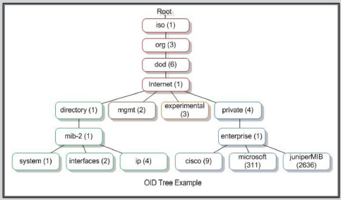
SNMP ja Zabbix¶
- Zabbix toetab SNMP v1, 2c ja 3
- SNMPv3 toetab autentimist ja krüpteerimist
- Iga andmeelemendi kohta community, turvalisuse tase ja port
- Kasutaja makrode tugi SNMP community's
- SNMP päringuid töötlevad Zabbix pollerid
- Zabbix tarnitakse koos mitme eelnevalt määratletud SNMP mallga
- Zabbix toetab SNMP päringute paketttöötlust

Discovery¶
Hostide avastamine¶
- Paigaldame hostidele zabbix-agent, avame pordi 10050
- Määrame Server parameetri (soovitatav on luua ansible playbookid agenti paigaldamiseks uutele hostidele)
- Lisame avastamireegli Data Collection -> Discovery
- Aktiveerime või lisame toimingu tüübiga Discovery Actions kohas Alerts -> Actions -> Discovery actions

Näide¶
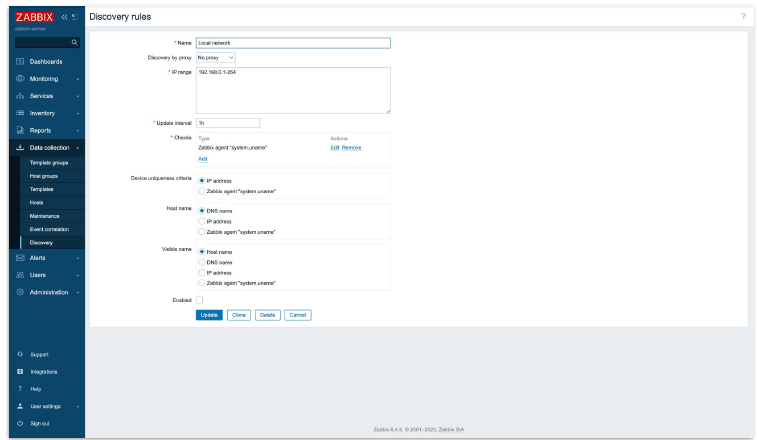
Hostide avastamine SNMP kaudu¶
- Hostil on snmpd aktiveeritud, SNMP jaoks avatud tulemüür
- Lisame Discovery rule SNMP kontrolliga
- Lisame Action koos SNMP jaoks lingitud malliga
Näide¶
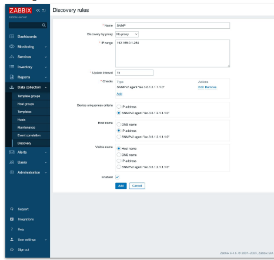
LLD: madala taseme avastamine¶
- Võimalus luua kasutaja reegleid ja malle erinevate jälgimiskomponentide avastamiseks lõppsüsteemis:
- kettad, failisüsteemid, võrguinterfaceäid
- SQL tabelid
- SQL päringute põhjal meetrikad
- mis tahes muud mallipõhised meetrikad, mille saamine on võimalik skripti kaudu realiseerida
LLD: komponendid¶
- Madala taseme avastamisreegel
- Andmeelementide prototüübid
- Triger prototüübid
- Graafiku prototüübid
- Võrgusõlmede prototüübid
LLD: interaktsiooniskeem¶
sequenceDiagram
participant Z as Zabbix Server
participant A as Zabbix Agent
participant T as Sihtssüsteem
Note over Z,T: Madala Taseme Avastamise Protsess
Z->>A: Saada avastamisreegli päring
A->>T: Kogu avastamisandmed
T-->>A: Tagasta toorandmed (liidesed, kettad, jne)
A->>A: Töötle andmed avastamiselementidega
A-->>Z: Tagasta avastamisandmed JSON formaadis
Z->>Z: Töötle avastamisandmed
Note over Z: Iga avastatud elemendi jaoks
loop Iga Avastatud Üksuse Jaoks
Z->>Z: Loo elemendid prototüüpide põhjal
Z->>Z: Loo päästikud prototüüpide põhjal
Z->>Z: Loo graafikud prototüüpide põhjal
end
Note over Z: Seire algab
Z->>A: Küsi andmeid avastatud elementide kohta
A->>T: Kogu konkreetseid mõõdikuid
T-->>A: Tagasta mõõdikute andmed
A-->>Z: Tagasta töödeldud mõõdikud
Z->>Z: Salvesta andmed ja hinda päästikuid
Prototüüpide loomine¶
- LLD reeglid tagastavad andmeid makrodes:
- Failisüsteemid: {#FSNAME}, {#FSTYPE}
- Interfaced: {#IFNAME}
- SNMP: {#SNMPINDEX}, {#SNMPVALUE}, ...
- Võtme näide: vfs.fs.size[{#FSNAME},free]
- LLD makrosid saab kasutada trigeri väljendites: {vfs.fs.size[{#FSNAME},pused].last(0)} > {#MY_CUSTOM_MACRO}
Näide¶

Zabbix-sender¶
-c, --config config-file
-s, --host host
# hosti nimi Zabbixis (tõstutundlik)
-k, --key key
# võti, meetrika nimetus
-o, --value value
# meetrika väärtus või JSON LLD jaoks
-i, --input-file input-file
# sisendfail andmetega meetrikate paketi saatmiseks
Konsooliutiliit meetrikate saatmiseks (Zabbix trapperisse)
Näide: Zabbix Discovery Trapper JSON Data Processing¶
graph TD
subgraph "Monitored Host"
Script["Custom Script"]
Data["System Data\n(filesystems, interfaces, etc.)"]
subgraph "JSON LLD Format"
JSON["{
'data': [
{'{#FSNAME}': '/dev/sda1', '{#FSTYPE}': 'ext4'},
{'{#FSNAME}': '/dev/sdb1', '{#FSTYPE}': 'xfs'}
]
}"]
end
ZS["Zabbix Sender\n(zabbix_sender -z server -s host -k discovery -o JSON)"]
end
subgraph "Zabbix Server"
ZT["Zabbix Trapper\n(Port 10051)"]
DP["Discovery Processor"]
subgraph "Low-Level Discovery Process"
Macros["Macro Processing\n{#FSNAME}, {#FSTYPE}, etc."]
ItemProto["Item Prototypes\nvfs.fs.size[{#FSNAME},free]"]
TriggerProto["Trigger Prototypes\n{vfs.fs.size[{#FSNAME},pused].last(0)} > 90"]
GraphProto["Graph Prototypes"]
end
DB[(Zabbix Database)]
end
Data -->|"Collected by"| Script
Script -->|"Formats as"| JSON
JSON -->|"Passed to"| ZS
ZS -->|"Sends to"| ZT
ZT -->|"Passes discovery data"| DP
DP -->|"Extracts macros"| Macros
Macros -->|"Applied to"| ItemProto
Macros -->|"Applied to"| TriggerProto
Macros -->|"Applied to"| GraphProto
ItemProto -->|"Creates actual items"| DB
TriggerProto -->|"Creates actual triggers"| DB
GraphProto -->|"Creates actual graphs"| DB
classDef script fill:#f9f,stroke:#333,stroke-width:1px;
classDef json fill:#ff9,stroke:#333,stroke-width:1px;
classDef zabbixComponent fill:#bbf,stroke:#333,stroke-width:1px;
classDef database fill:#bfb,stroke:#333,stroke-width:1px;
class Script,Data script;
class JSON json;
class ZS,ZT,DP,Macros,ItemProto,TriggerProto,GraphProto zabbixComponent;
class DB database;
Näide: Zabbix High Availability Data Flow¶
sequenceDiagram
participant AA as Active Agent
participant PA as Passive Agent
participant SD as SNMP Device
participant ZP as Zabbix Proxy
participant ZS1 as Zabbix Server 1<br>(Active)
participant ZS2 as Zabbix Server 2<br>(Standby)
participant DB as Database Cluster
participant WEB as Web Frontend
participant ADM as Administrator
Note over AA,PA: Active vs Passive Monitoring
%% Active Agent flow
AA->>AA: Collects metrics based<br>on local configuration
AA->>ZP: Initiates connection and<br>sends collected metrics
ZP->>ZP: Buffers and processes<br>received data
ZP->>ZS1: Forwards processed data<br>to active Zabbix server
%% Passive Agent flow
ZS1->>PA: Polls for metrics
PA->>ZS1: Responds with requested metrics
%% SNMP monitoring flow
ZP->>SD: Polls for SNMP metrics
SD->>ZP: Returns SNMP data
ZP->>ZS1: Forwards SNMP data
%% Server processing
ZS1->>DB: Writes collected data
ZS1->>ZS1: Processes triggers,<br>actions, and alerts
%% HA Synchronization
ZS1-->>ZS2: Heartbeat and status sync
Note over ZS1,ZS2: Continuous HA monitoring
%% Failover scenario
Note over ZS1,ZS2: Failover scenario
ZS1-xZS2: Active server fails
ZS2->>ZS2: Detects failure and<br>activates standby node
ZS2->>DB: Takes over database connections
ZP--xZS1: Connection fails
ZP->>ZS2: Reconnects to standby server<br>that is now active
%% Admin interaction
ADM->>WEB: Accesses dashboard
WEB->>DB: Queries monitoring data
DB->>WEB: Returns data for display
WEB->>ADM: Displays monitoring<br>information and alerts
%% Configuration change
ADM->>WEB: Makes configuration change
WEB->>DB: Writes configuration change
DB->>ZS2: Configuration is pulled<br>by active server
ZS2->>ZP: Updated configuration<br>is pushed to proxies
ZP->>AA: Updated configuration<br>is sent to active agents
Note over AA,ADM: High Availability ensures<br>continuous monitoring
Näide: Zabbix Enterprise Network Communication Paths¶
flowchart TB
%% Define the main components
subgraph "External Network"
EXT_USERS[External Users]
API_CLIENTS[API Clients]
REMOTE_AGENTS[Remote Agents]
end
subgraph "DMZ"
LB[Load Balancer]
WEB_NODES[Web Servers]
VPN[VPN Gateway]
end
subgraph "Core Network"
subgraph "Zabbix Server Infrastructure"
ZS_CLUSTER[Zabbix Server Cluster]
PROXIES[Zabbix Proxies]
end
subgraph "Database Infrastructure"
DB_LB[Database Load Balancer]
PG_PRIMARY[PostgreSQL Primary]
PG_STANDBY[PostgreSQL Standby]
end
end
subgraph "Monitored Infrastructure"
subgraph "Data Centers"
DC_SERVERS[Servers]
DC_NETWORK[Network Devices]
DC_STORAGE[Storage Systems]
end
subgraph "Remote Sites"
BRANCH_DEVICES[Branch Office Devices]
end
subgraph "Cloud Infrastructure"
CLOUD_RESOURCES[Cloud Resources]
end
subgraph "IoT"
IOT_DEVICES[IoT Devices]
end
end
%% Define the communication paths with protocols
%% External to DMZ
EXT_USERS-->|HTTPS\nPort 443|LB
API_CLIENTS-->|HTTPS API\nPort 443|LB
REMOTE_AGENTS-->|VPN|VPN
%% DMZ connections
LB-->|HTTP|WEB_NODES
VPN-->|Internal Network|ZS_CLUSTER
%% Web to Zabbix Server
WEB_NODES-->|PostgreSQL Protocol\nPort 5432|DB_LB
WEB_NODES-->|Internal API\nPort 10051|ZS_CLUSTER
%% Zabbix Server connections
ZS_CLUSTER-->|PostgreSQL Protocol\nPort 5432|DB_LB
ZS_CLUSTER<-->|HA Sync\nTCP 10051|ZS_CLUSTER
ZS_CLUSTER<-->|Server-Proxy\nTCP 10051|PROXIES
%% Database connections
DB_LB-->|PostgreSQL Protocol|PG_PRIMARY
PG_PRIMARY-->|Replication Stream|PG_STANDBY
%% Monitoring connections
PROXIES-->|TCP 10050\nPassive Agent|DC_SERVERS
DC_SERVERS-->|TCP 10051\nActive Agent|PROXIES
PROXIES-->|SNMP UDP 161/162|DC_NETWORK
PROXIES-->|Storage Protocols|DC_STORAGE
%% Remote site monitoring
PROXIES-->|Various Protocols|BRANCH_DEVICES
BRANCH_DEVICES-->|TCP 10051\nActive Agent|PROXIES
%% Cloud monitoring
ZS_CLUSTER-->|HTTPS API Calls|CLOUD_RESOURCES
PROXIES-->|HTTPS API Calls|CLOUD_RESOURCES
%% IoT monitoring
IOT_DEVICES-->|MQTT, HTTP|PROXIES
%% Styling
classDef external fill:#f9a,stroke:#333,stroke-width:1px;
classDef dmz fill:#adf,stroke:#333,stroke-width:1px;
classDef core fill:#bbf,stroke:#333,stroke-width:2px;
classDef database fill:#bfb,stroke:#333,stroke-width:1px;
classDef monitored fill:#ddf,stroke:#333,stroke-width:1px;
class EXT_USERS,API_CLIENTS,REMOTE_AGENTS external;
class LB,WEB_NODES,VPN dmz;
class ZS_CLUSTER,PROXIES core;
class DB_LB,PG_PRIMARY,PG_STANDBY database;
class DC_SERVERS,DC_NETWORK,DC_STORAGE,BRANCH_DEVICES,CLOUD_RESOURCES,IOT_DEVICES monitored;
Näide: Enterprise Zabbix Architecture with High Availability¶
flowchart TB
%% Define the load balancer and frontend
LB[Load Balancer]
%% Define user access points
Admin[Administrator]
Users[Users]
API[API Clients]
%% Define Web Frontend servers with HA
subgraph "Web Frontend"
WebUI1[Web Server 1]
WebUI2[Web Server 2]
WebUI3[Web Server 3]
end
%% Define Zabbix server cluster
subgraph "Zabbix Server Cluster HA"
ZServer1[Zabbix Server\nActive Node]
ZServer2[Zabbix Server\nStandby Node]
ZServer3[Zabbix Server\nStandby Node]
subgraph "Server Processes"
Poller1[Pollers]
Trapper1[Trappers]
Discovery1[Discovery]
LLD1[LLD]
SNMP1[SNMP Pollers]
IPMI1[IPMI Pollers]
JMX1[JMX Pollers]
HTTP1[HTTP Pollers]
Alert1[Alerters]
Escalator1[Escalator]
TimedTriggers1[Timed Triggers]
end
end
%% Define the database layer with HA
subgraph "Database Layer HA"
DBCluster[Database Cluster]
DB_Primary[(Primary DB)]
DB_Replica1[(Replica DB 1)]
DB_Replica2[(Replica DB 2)]
end
%% Define proxies in different locations
subgraph "Distributed Proxies"
ProxyDC1[Proxy\nData Center 1]
ProxyDC2[Proxy\nData Center 2]
ProxyBranch1[Proxy\nBranch Office 1]
ProxyBranch2[Proxy\nBranch Office 2]
ProxyCloud[Proxy\nCloud]
end
%% Define monitored infrastructure
subgraph "Data Center 1"
DC1_Servers[Servers\nLinux/Windows]
DC1_Network[Network Devices]
DC1_Storage[Storage]
DC1_VirtualInfra[Virtualization]
end
subgraph "Data Center 2"
DC2_Servers[Servers\nLinux/Windows]
DC2_Network[Network Devices]
DC2_Storage[Storage]
DC2_VirtualInfra[Virtualization]
end
subgraph "Branch Offices"
Branch_Servers[Local Servers]
Branch_Network[Network Equipment]
Branch_POS[POS Terminals]
end
subgraph "Cloud Infrastructure"
Cloud_VMs[Virtual Machines]
Cloud_Services[Cloud Services]
Cloud_Containers[Containers]
Cloud_Serverless[Serverless Functions]
end
subgraph "Remote & IoT"
IOT_Devices[IoT Devices]
Mobile_Agents[Mobile Devices]
External_Services[External Services]
end
%% Define agent types on monitored devices
subgraph "Monitoring Methods"
Active_Agent[Active Agents]
Passive_Agent[Passive Agents]
SNMP_Devices[SNMP]
Custom_Scripts[Custom Scripts]
API_Monitoring[API Polling]
Trapper_Receivers[Trappers]
end
%% Connection from users to frontend
Admin --> LB
Users --> LB
API --> LB
%% Load balancer to web servers
LB --> WebUI1
LB --> WebUI2
LB --> WebUI3
%% Web servers to database
WebUI1 --> DBCluster
WebUI2 --> DBCluster
WebUI3 --> DBCluster
%% Database cluster connections
DBCluster --> DB_Primary
DB_Primary --> DB_Replica1
DB_Primary --> DB_Replica2
%% Web UI to Zabbix server
WebUI1 --> ZServer1
WebUI2 --> ZServer1
WebUI3 --> ZServer1
%% HA connections between Zabbix servers
ZServer1 <--> ZServer2
ZServer1 <--> ZServer3
ZServer2 <--> ZServer3
%% Zabbix server to database
ZServer1 --> DB_Primary
ZServer2 --> DB_Primary
ZServer3 --> DB_Primary
%% Zabbix server process connections
ZServer1 --> Poller1
ZServer1 --> Trapper1
ZServer1 --> Discovery1
ZServer1 --> LLD1
ZServer1 --> SNMP1
ZServer1 --> IPMI1
ZServer1 --> JMX1
ZServer1 --> HTTP1
ZServer1 --> Alert1
ZServer1 --> Escalator1
ZServer1 --> TimedTriggers1
%% Proxy connections to Zabbix server
ProxyDC1 --> ZServer1
ProxyDC2 --> ZServer1
ProxyBranch1 --> ZServer1
ProxyBranch2 --> ZServer1
ProxyCloud --> ZServer1
%% Data Center 1 connections
ProxyDC1 --> DC1_Servers
ProxyDC1 --> DC1_Network
ProxyDC1 --> DC1_Storage
ProxyDC1 --> DC1_VirtualInfra
%% Data Center 2 connections
ProxyDC2 --> DC2_Servers
ProxyDC2 --> DC2_Network
ProxyDC2 --> DC2_Storage
ProxyDC2 --> DC2_VirtualInfra
%% Branch office connections
ProxyBranch1 --> Branch_Servers
ProxyBranch1 --> Branch_Network
ProxyBranch1 --> Branch_POS
ProxyBranch2 --> Branch_Servers
ProxyBranch2 --> Branch_Network
ProxyBranch2 --> Branch_POS
%% Cloud infrastructure connections
ProxyCloud --> Cloud_VMs
ProxyCloud --> Cloud_Services
ProxyCloud --> Cloud_Containers
ProxyCloud --> Cloud_Serverless
%% Remote and IoT connections (can go direct to server or via proxies)
IOT_Devices --> ProxyBranch1
Mobile_Agents --> ZServer1
External_Services --> ZServer1
%% Connection types
DC1_Servers --- Active_Agent
DC1_Servers --- Passive_Agent
DC1_Network --- SNMP_Devices
DC2_Servers --- Custom_Scripts
Cloud_Services --- API_Monitoring
IOT_Devices --- Trapper_Receivers
%% Styling
classDef loadBalancer fill:#f9a,stroke:#333,stroke-width:2px;
classDef users fill:#fdd,stroke:#333,stroke-width:1px;
classDef webServers fill:#adf,stroke:#333,stroke-width:1px;
classDef zabbixServers fill:#bbf,stroke:#333,stroke-width:2px;
classDef databases fill:#bfb,stroke:#333,stroke-width:2px;
classDef proxies fill:#abf,stroke:#333,stroke-width:1px;
classDef monitors fill:#ddf,stroke:#333,stroke-width:1px;
classDef infra fill:#eee,stroke:#333,stroke-width:1px;
classDef monTypes fill:#ffe,stroke:#333,stroke-width:1px;
class LB loadBalancer;
class Admin,Users,API users;
class WebUI1,WebUI2,WebUI3 webServers;
class ZServer1,ZServer2,ZServer3,Poller1,Trapper1,Discovery1,LLD1,SNMP1,IPMI1,JMX1,HTTP1,Alert1,Escalator1,TimedTriggers1 zabbixServers;
class DBCluster,DB_Primary,DB_Replica1,DB_Replica2 databases;
class ProxyDC1,ProxyDC2,ProxyBranch1,ProxyBranch2,ProxyCloud proxies;
class DC1_Servers,DC1_Network,DC1_Storage,DC1_VirtualInfra,DC2_Servers,DC2_Network,DC2_Storage,DC2_VirtualInfra,Branch_Servers,Branch_Network,Branch_POS,Cloud_VMs,Cloud_Services,Cloud_Containers,Cloud_Serverless,IOT_Devices,Mobile_Agents,External_Services infra;
class Active_Agent,Passive_Agent,SNMP_Devices,Custom_Scripts,API_Monitoring,Trapper_Receivers monTypes;